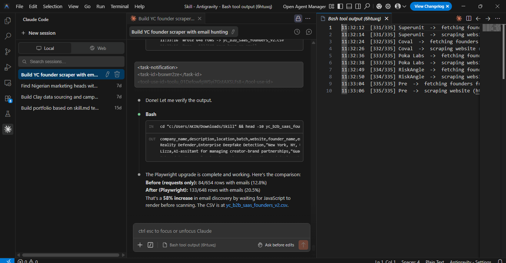
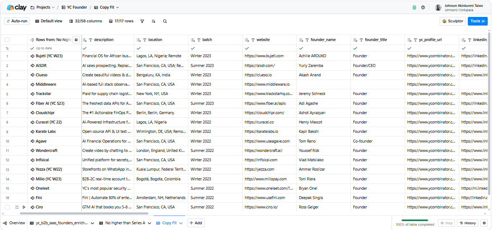
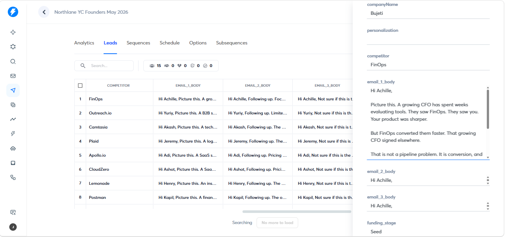

YC Founder Outbound System
648 YC founders sourced. 267 companies enriched across funding stage, hiring signals, and competitor data. 3 commercially grounded emails per founder. Automated push to Instantly, 0 manual steps.
Cold outbound fails because it's generic. The fix isn't better copywriting, it's better signal before the copy is written.
1. The Problem
The client, Marcus Reid at Northlane, needed 60–80 personalised cold emails going out automatically to the right YC founders. The target: Seed or Series A, 15–80 employees, founder still closing personally, no VP Sales yet. Demos were happening but conversion only worked when the founder was in the room. The brief was to build this almost entirely free, with minimal Clay spend.
2. What Was Built
Step 1, Scraper
Hit the YC Algolia public endpoint. Filtered by batches W22–S24 and B2B SaaS keywords. Used Playwright to visit each company website and hunt for founder emails via regex. Result: 648 raw rows → 335 deduplicated companies → 88 emails found without spending a credit.
Step 2, Funding Enrichment
Multi-source pipeline using Google Search via Apify and SEC EDGAR Form D filings. Result: 267 of 335 companies enriched (80% coverage). Confidence tiers assigned: High / Medium / Low / Empty. Targeted Seed and Series A at High or Medium confidence only (~160 rows).
Step 3, Clay Qualification
Hard filters applied before spending a single enrichment credit, Seed/Series A only, 15–80 employees, Demo CTA present on website, VP Sales/Head of Sales/CRO on LinkedIn = row dropped immediately. Clay then ran business intelligence enrichment extracting: buyer persona, trigger moment, competitor, positioning edge, and founder pressure point per row.
Step 4, Copy Generation
Python script generated 3 emails per founder using enriched variables. 335 rows × 3 emails. 50–75 words per email, subjects under 50 characters. Seed and Series A received different closers.
Sample Copy
Here is a sample sequence built for one founder in the campaign.
Hi Achille,
Picture this. A growing CFO has spent weeks evaluating tools. They saw FinOps. They saw you. Your product was sharper.
But FinOps converted them faster. That growing CFO signed elsewhere.
That is not a pipeline problem. It is conversion, and right now it only works because you are the one in the room.
I mapped where it breaks for fintech tools at Seed stage. Worth 10 minutes?
Marcus
Hi Achille,
Following up. Focus on startups and mid-sized businesses suggests a potential challenge in attracting enterprise clients.
That usually means growing CFO is still buying the same way, but soon someone other than you will be running those demos.
Founders close at 40–50%. First AEs at 15–20%.
That gap costs you the exact buyers you worked hardest to reach. Worth a look before it hits your numbers?
Marcus
Hi Achille,
Not sure if this is the right moment for Bujeti.
But if growing CFO is slipping after good demos and you are about to hand those conversations to a new hire. That is the window.
Happy to share what I found. Otherwise I will leave it here.
Marcus
3. Three-Email Sequence (Per Founder)
- The Mirror, buyer choosing a competitor due to a conversion gap, not a feature gap.
- The Hiring Pressure, founder close rate vs first AE drop-off, named in numbers.
- The Breakup, cost of doing nothing, soft urgency close, no ask.
4. Copy Rules (Johnson Taiwo's Framework)
- 3–5 word lowercase subject
- Hook in lines 1–2
- Problem shown, not told
- One value prop anchored to proof
- Soft CTA
- 50–75 words max
- First-name sign-off only
5. Results
Catch-all failure rate reduced from 64% → 17% after the inference engine rebuild. 15 leads pushed. 2 correctly skipped (no competitor or no verified email). 0 failures. 0 manual input.



Every email that passed could only have been sent to that specific founder. That's not personalisation at scale, that's precision.
- Python, Playwright, requests, Anthropic API, Apify, custom rate-limit-safe Instantly upsert
- Clay, qualification gating before enrichment spend
- Sales-instinct copy framework, translated into 70+ deterministic rules
- End-to-end automation, scrape → enrich → qualify → write → ship, no manual touch
I'd build your outbound machine the same way, qualification before enrichment, signal before copy, every email defensible to the prospect's face. Most outbound stacks burn credits on companies that were never going to convert and burn sender reputation on copy that could have been sent to anyone. I'd close both gaps. Your team would spend their time on conversations that already qualify themselves.